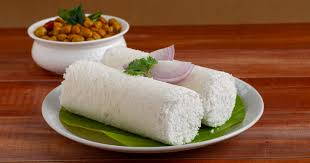

Puttu is Kerala's morning ritual. Steamed in bamboo cylinders, layered with coconut, it crumbles gently at the touch. A dish that needs no pretense — just simplicity, steam, and tradition. Eaten with banana or curry, it is comfort in its purest form.